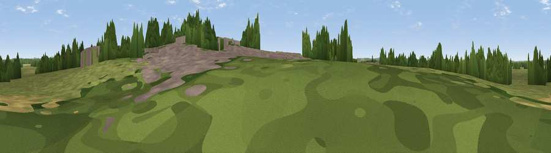

Viewpoint near Stoke Golding
#44577 in England · top 94% of its area beats it · near Stoke GoldingThe view, rendered

A 360° render of this exact spot computed from the terrain model, tree cover and land cover — summer colours, afternoon light, calibrated against photographs of famous viewpoints. Real trees, hedges and buildings will differ in detail.
The panorama
Grey silhouette: terrain skyline in each direction (720 bearings, Earth curvature and refraction included). Dashed green: skyline with trees (+15 m) and buildings (+8 m) as obstacles. Blue strip: how far the ground is visible on each bearing.
Where the view opens
Wedge length = distance to the farthest visible ground on that bearing (vegetation-aware). Rings at 10, 25 and 50 km.
What fills the view
60% grassland · 18% woodland · 13% cropland · 8% built-up
Angular shares of the visible panorama (visual magnitude), not map area. Landscape diversity 0.47 (0–1 Shannon).
Key numbers
More beautiful places nearby
The staircase of upgrades: each row has a higher view potential than everything closer. Driving times are estimates from straight-line distance, calibrated against real road routing — check an actual route before setting out.
| Place | Direction | Drive | Score |
|---|---|---|---|
| Viewpoint near Shenton | NNE · 3 km | ~7 min | 37.1 |
| Mount Jud | SW · 6 km | ~13 min | 62.4 |
| Viewpoint near Ansley Common | WSW · 8 km | ~17 min | 63.1 |
| Viewpoint near Ansley Common | WSW · 9 km | ~18 min | 69.0 |
| Viewpoint near Stanton under Bardon | NNE · 17 km | ~30 min | 76.0 |
| Viewpoint near Woodhouse Eaves | NE · 21 km | ~35 min | 77.7 |
| Viewpoint near Abberley | WSW · 71 km | ~94 min | 78.1 |
| Abberley Hill | WSW · 71 km | ~94 min | 80.4 |
52.57217, -1.41838 · source: osm viewpoint · position refined by local search. Computed location — check access rights before visiting.